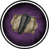

|

|
>> Содержание / Список кланов /
  EssenceofDarkness EssenceofDarkness
Безумец. Он уже полсотни лет пытался создать величайший эликсир. Будучи когда-то совсем еще юным травником, он бросил все. Бросил свой Орден Чести, покинул шумную столицу и уединился на заброшенной Мельнице. До этого он никогда не задумывался над сутью бессмертия, но в возрасте тридцати лет он потерял всех, кто был ему близок и дорог. Разум его помутился, единственной целью в жизни стало стремление обрести вечную жизнь, создать эликсир бессмертия.
В поисках заветной формулы он пытался сочетать самые различные компоненты. Он раз за разом смешивал Свет и Тьму, но никогда эти эксперименты не завершались успехом. Полученные смеси имели серый или нейтральный характер, имели неустойчивую структуру, и мгновенно распадались обратно на составляющие. И после многих лет стараний безумный разум породил идею создания Перегонного Куба.
В этом направлении эксперименты шли просто замечательно. Они всегда завершались успешно и давали необходимые промежуточные результаты, которые подсказывали дорожку к следующим творениям. Такой неистовости в работе Алхимика не было никогда ранее, он уже видел свою цель и спешил достичь ее как можно скорее. Но спешка никогда не доводит до добра.
В тот ясный теплый день он не мог оторвать взгляд от своего творения. На рабочем столе Алхимика стоял завершенный Перегонный Куб Человеческих Чувств. Ни один человек еще никогда не создавал ничего подобного, а этот безумец смог. Смог, потому что он не был сумасшедшим, он лишь был безумен настолько, насколько бывает безумным человек, увлеченный своей идеей. Насколько бывает увлечен Алхимик, поставивший цель достичь бессмертия.
Его замысел был прост. Любое человеческое чувство, любое достоинство, любую черту характера можно материализовать.
Единственным подходящим материалом для своей цели Алхимик посчитал самого себя. Он перегнал из себя все, что посчитал достойным: честь и честность, справедливость и совесть, добро и доблесть, а самой последней он перегнал жажду жизни! Но он забыл о том, что человек не идеален.
Полученная Алхимиком Эссенция чувств и достоинств должна была стать основным ингредиентом для эликсира бессмертия. Она стояла в прохладном темном углу, остывая и отстаиваясь после создания. А безумец тем временем вышел во двор, чтобы насладиться свежестью весеннего дня, предвкушая завершение полувековой работы, и поймать лучик ясного солнца для придания эликсиру силы первозданного Света.
К тому моменту, когда Алхимик, собравшись с мыслями, вернулся обратно, Эссенция успела принять почти первоначальный вид и прекратила кипеть, легкий запах серы уже был развеян сквозняком, а узловатая пара рук спряталась обратно под покров первозданной Тьмы. А безумный гений, пританцовывая от нетерпения, нес в руках несколько кристалликов чистого Света, предвкушая скорую победу над Смертью. Он, конечно же, не заметил легкого изменения Эссенции.
Истинный Свет и Истинная Тьма никогда не могли существовать вместе, НИКОГДА. Четыре гектара леса неподалеку от Мельницы как будто никогда и не существовали, а все живые создания, находящиеся вблизи, в слепой панике старались убежать, улететь, уползти как можно дальше от этого места. Люди тоже почувствовали, что произошло что-то неладное.
Лишь незримый Мусорщик ликовал. Наконец-то его многолетний план осуществился. Алхимик может и дальше думать, что допустил ошибку, но Он - Мусорщик - знал, чья воля незримо стояла за всеми этими годами стараний. Взрыв разметал во все уголки Мира Его великое творение. Люди, самые обычные люди приняли маленькую частичку той самой эссенции. И люди эти начинали меняться. Поначалу они не понимали, что с ними происходит, но чувствовали изменения в себе и это их пугало. Они начинали искать и находили. Находили таких же точно людей, в которых сполна проявлялись все достоинства безумного Алхимика. Но Свет навсегда покинул души этих людей. И тогда родился новый Клан, Клан гордых, крепких духом, целеустремленных людей. Людей, навсегда приютивших в своих душах Эссенцию тьмы - Темную Сущность.
Официальный сайт клана: http://www.essenceofdarkness.ru
|
 |
|